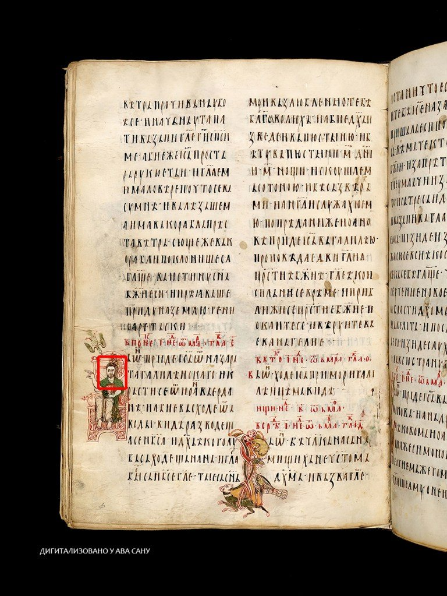
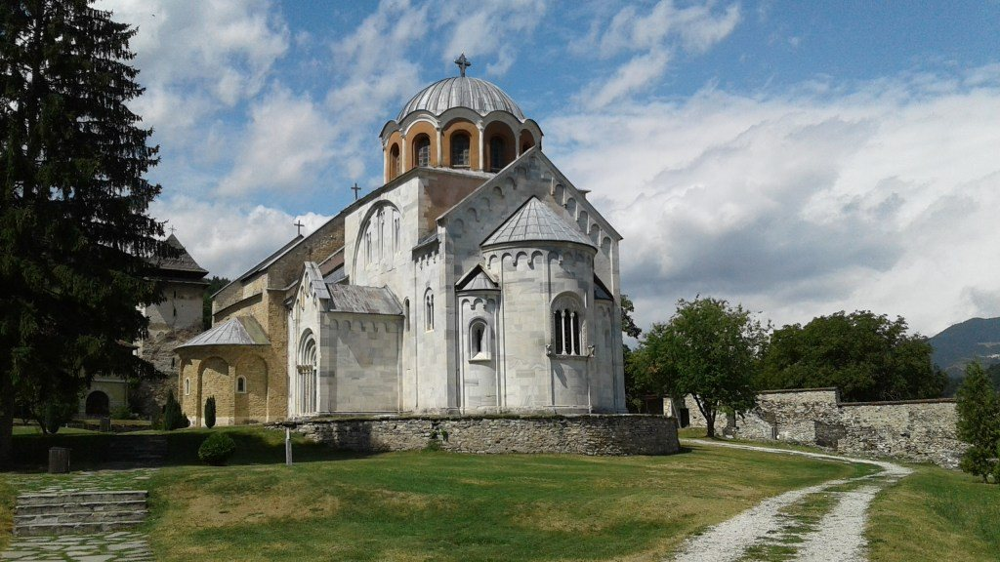

Почетна — Духовно наслеђе Балкана


Духовна историја Балкана, са посебним освртом на Србију, богумилство и слободу савести.
Духовно наслеђе Балкана је независан културни пројекат посвећен историји религијских идеја и односу савести, институција и власти у балканском региону.
Полазиште су средњовековна сведочанства о богумилству, а истраживање се затим шири на Србију, Босну и духовне везе југоисточне Европе. Пут се наставља размишљањем о савременом памћењу, без претпоставке о непосредном историјском пореклу које би средњовековне дисиденте повезало са модерним српским друштвом.
Почните овде
Богумили: историја, извори и верско неслагање
Увод у дуалистички покрет, непријатељска сведочанства, питање зла, црквене осуде и границе онога што можемо поуздано реконструисати.
Средњовековна Србија: Немања и верско неслагање
Шта Житије Симеона говори о прогону јереси? Анализа извора, династичког контекста и односа црквене самосталности и верске слободе.
Босанска црква и дуализам
Отворено историографско питање: контакти и утицаји сами по себи не доказују да је цела једна црква била богумилска.
Истражите теме
Историјска истраживања
Средњовековни извори, верско неслагање и везе међу балканским заједницама.
Памћење и савест
Савремена Србија, сећање на сукобе и различите историјске одговорности.
Метод и извори
Критеријуми за разликовање сведочанстава, научних тумачења и савремених интерпретација.
Тема која повезује истраживање
Пројекат упоређује различита раздобља кроз питање: како се брани достојанство савести када политичка или верска власт захтева послушност? Ово је филозофско поређење и као такво је јасно означено; оно не доказује историјски континуитет између средњовековног богумилства и савременог српског друштва.
Истраживање је независно и није повезано са универзитетима или институцијама.


Уредник, публикације и контакти
Пројекат уређује Симоне Поци и независан је од универзитета и институција. Личне публикације представљене су одвојено од историјских прилога на овом сајту.